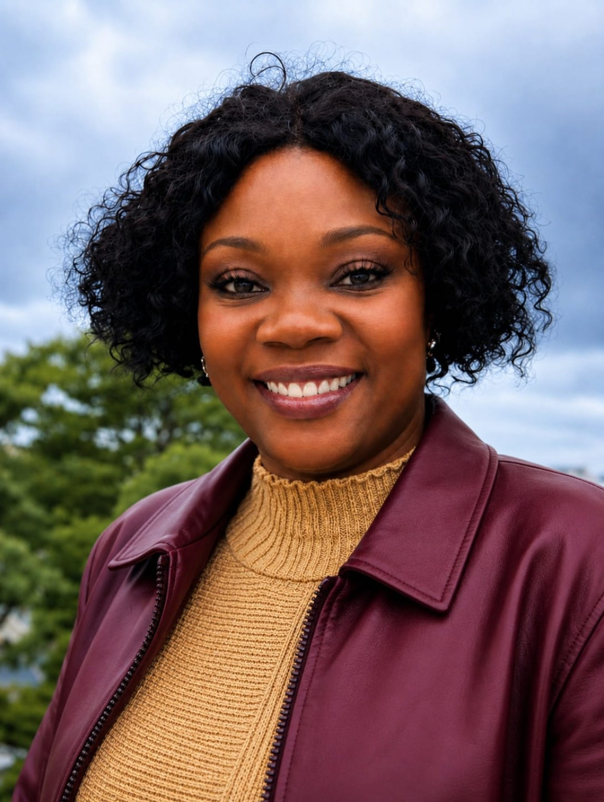

Understand the problem
Clarify the decision, business context and available evidence before choosing a method.
I'm Nomvelo Shoko, a Business Analytics master's student at Brandeis University. I combine a background in financial administration and business operations with analytical methods to help organizations understand problems and make informed decisions.

I value analysis that starts with a useful question, tests assumptions carefully and communicates findings in language decision-makers can act on.
Clarify the decision, business context and available evidence before choosing a method.
Use statistical modeling, data preparation and visualization while acknowledging uncertainty and limitations.
Translate results into understandable implications for planning, operations and business performance.
A growing collection of academic analytics projects. Detailed pages are published as the supporting analyses and visuals are reviewed.
Examined monthly U.S. consumer price movements using regression in R. Price-category changes were statistically associated with headline CPI; the conflict-period indicator was not independently significant in the final model.
Read project case study ↗Compared university-area mobility patterns across January 2025 and January 2026 using visual analysis and presentation storytelling.
Detailed case study in preparationDefined a customer-month dataset, target outcome and candidate predictors, and examined data leakage and future-use validation concerns.
Coursework case study in preparation; no unverified model results claimedUsed Vensim stock-and-flow modeling to explore how different assumptions influence long-term simulated debt trajectories.
Detailed case study in preparationMy professional foundation includes financial administration, reporting, executive support and operational coordination.
Business Administrator — Supported billing, payroll, administrative processes and financial reporting.
Personal Assistant to the Director — Prepared client documents, reports and proposals and supported executive operations.
Financial Administrator — Worked with financial transactions, cash-flow reporting and monthly financial statements.
Graduate academic projects — Applying regression, programming, data visualization and business modeling in MSBA coursework.
R · Python · SQL · Excel
Regression · Hypothesis testing · Exploratory analysis · Systems modeling
Tableau · Power BI · Data storytelling · Business reporting
My career has moved from business administration and financial reporting into analytics. That combination shapes how I approach projects: understanding what matters to the organization, examining the evidence and communicating findings clearly.
I'm especially interested in helping businesses and entrepreneurs use analytics to improve performance, understand customers and make confident decisions.
Interested in business analytics, data-driven strategy and opportunities to connect analysis with real organizational needs.